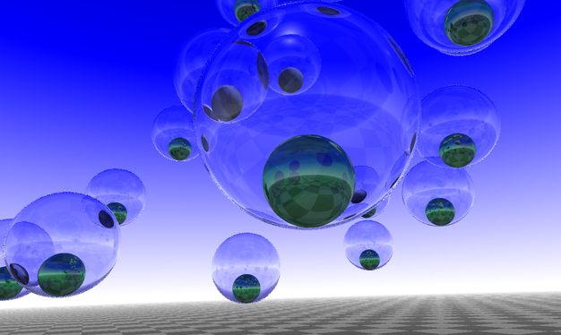

Table of Contents
- 1 - Objectifs, pointeurs utiles
- 2 - Prise en main du code
- 3 - Rendu primitif des sphères
- 4 - Ombres, réflexions, réfractions
- 5 - Allez plus loin, allez plus haut !
- 5.1 Un nouvel objet graphique: le plan infini (*)
- 5.2 Une variante du plan infini, l'eau calme (***)
- 5.3 Anti-aliasing et problèmes numériques (**)
- 5.4 Un nouvel objet graphique : le triangle (**)
- 5.5 Mettre des textures sur les triangles (***)
- 5.6 Rendu rapide par décision aléatoire (***)
- 5.7 Faire un film (**)
- 5.8 Faire un ciel (***)
- 6 - Bétisier
- 7 - A rendre
author: Jacques-Olivier Lachaud
1 - Objectifs, pointeurs utiles
L'objectif de ce TP est de vous faire écrire un algorithme de rendu "réaliste" appelé lancer de rayons (ray-tracing ou eye-tracing en anglais).
Le principe est le suivant. On va calculer comment les rayons lumineux ont éclairé la scène observée. Ils ont rebondi ou traversé certains objets puis sont arrivés dans l'oeil. L'ensemble de ces rayons a donc formé une image sur notre rétine. Le problème de cette approche directe est que la plupart des rayons lumineux ne sont pas allés sur notre rétine mais sont allés ailleurs ! Il faudrait donc envoyer des milliards de milliards de rayons pour voir la scène se dessiner sur notre rétine.
L'idée du lancer de rayons est de calculer la couleur de chaque pixel indépendamment (un pixel étant un point sur la rétine) en reconstruisant le trajet inverse de la lumière. On part de l'oeil et on détecte où ce rayon va tomber dans la scène. Si ce rayon tombe sur un objet réfléchissant, on fait rebondir le rayon (réflexion) et on continue. Si ce rayon tombe sur un objet transparent, on le traverse (réfraction). Si ce rayon tombe sur un objet mat on calcule la couleur en regardant où sont les sources de lumière et on s'arrête (diffusion).
Les images ci-dessous vous donnent une idée de la qualité des rendus que l'on peut obtenir avec cet algorithme. Cela peut être très joli !
Les avantages de cet algorithme sont:
- Les résultats peuvent être magnifiques avec (relativement) peu d'efforts !
- on rajoute de nouveaux types d'objets de façon très simple, et cela ne change pas l'algorithme !
- on peut même rajouter des textures fixes ou procédurales sans efforts.
- cet algorithme est naturellement parallèle.
Les inconvénients de cet algorithme sont les suivants:
- lenteur: la complexité de l'algorithme augmente directement en fonction du nombre d'objets et du nombre de lumière, et encore plus lorsque l'on rajoute de la transparence ou de la réflexion.
- les surfaces triangulées sont très coûteuses à rendre avec cet algorithme, surtout quand on compare à ce que font les cartes graphiques.
- "réaliste": en fait ce n'est pas vraiment un rendu réaliste au sens physique du terme, ça donne des résultats jolis, éventuellement proches de vraies images. On ne peut parler de rendu physiquement réalistes pour plusieurs raisons: (i) il faudrait ne pas travailler en RGB mais en longueurs d'onde de lumière (faisable quand même en lancer de rayon, mais coûteux), (ii) les spécularités et ombres sont traitées de façon approchées (et sont fausses en présence de miroir et autres).
- erreurs numériques: les réflexions/réfractions successives des rayons et leurs intersections avec les objets donnent lieu à des erreurs numériques. On est en réalité obligé d'envoyer plusieurs rayons par pixel avec des méthodes d'échantillonnage non triviales (type quasi-Montecarlo).
A l'issue de cette séance, vous vous serez bien amusés ! Plus sérieusement, vous aurez manipulé:
- du C++, avec pas mal de classes, du polymorphisme dynamique pour représenter les objets graphiques
- un peu d'OpenGL et de libQGLViewer pour afficher vos objets graphiques, placer la caméra, faire des films...
- de la géométrie dans l'espace pour calculer les intersections des rayons avec des objets, calculer les normales ou les rayons réfléchis.
- des matériaux: comprendre les différences entre des objets mats ou brillants, des objets transparents, les couleurs diffuses ou spéculaires.
L'objectif du TP est:
- implémenter un algorithme assez complet de lancer de rayons
- créer plusieurs objets graphiques: sphères, plans infinis, triangles, etc.
- créer plusieurs matériaux pour varier vos scènes.
- éventuellement, aller jusqu'à faire un film ou une animation.
Les sites suivants pourront être utile pendant le TP:
- [https://github.com/GillesDebunne/libQGLViewer Site libQGLViewer: exemples, doc, références]
- [https://en.cppreference.com/w/ Référence C++: description détaillée des bibliothèques]
- [http://www.parashift.com/c++-faq-lite/index.html C++ FAQ]
- [https://www.scratchapixel.com/lessons/3d-basic-rendering/introduction-to-ray-tracing/how-does-it-work Learn computer graphics from scratch]
2 - Prise en main du code
2.1 - Code fourni
Afin de vous faciliter au mieux le travail et de vous concentrer sur la partie "graphique" du TP, on vous donne tout un ensemble de classes pour avoir un logiciel minimaliste pour démarrer:
- des classes de bases pour la géométrie: Point3 et Vector3 (fichier PointVector.h), Ray (fichier Ray.h)
- une classe Color pour représenter les couleurs (fichier Color.h)
- une classe Material pour représenter les matériaux (fichier Material.h)
- une classe Viewer pour pré-visualiser la scène et placer la caméra et les lumières (fichiers Viewer.h et Viewer.cpp)
- des classes abstraites pour décrire l'interface d'un objet graphique (GraphicalObject, fichier GraphicalObject.h) et d'une source de lumière (Light, fichier Light.h).
- une classe concrète Sphere, un modèle de GraphicalObject, pour représenter une sphère (fichiers Sphere.h et Sphere.cpp)
- une classe concrète PointLight, un modèle de Light, pour représenter un source ponctuelle de lumière (fichier PointLight.h)
- une classe Renderer pour calculer le rendu étant donné un point de vue (fichier Renderer.h)
- des classes pour représenter une image couleur (Image2D, fichier Image2D.h) et l'écrire sous forme de fichier PPM (Image2DWriter, fichier Image2DWriter.h)
- un exécutable ray-tracer.cpp pour lancer l'application
- un fichier de configuration ray-tracer.pro pour fabriquer le
Makefile(avecqmake)
- Note
- Tout le code est dans le namespace
rt.
2.2 - Construire l'application initiale
En plus d'un compilateur C++ (version c++11 au moins), il faut que vous ayez Qt (https://www.qt.io/) et libQGLViewer (https://github.com/GillesDebunne/libQGLViewer) installés pour que l'application fournie fonctionne. Ce n'est pas obligatoire d'avoir tout ça pour faire du ray-tracing mais c'est tellement plus agréable de placer sa caméra et ses lumières de façon interactive !
Pour faire le Makefile:
$ qmake
Si qmake ne marche pas, modifiez le fichier ray-tracer.pro pour votre système.
Pour compiler:
$ make
Pour exécuter:
$ ./ray-tracer
Pour le moment, vous devriez avoir une fenêtre avec 2 lumières et deux sphères. Si vous tapez sur Ctrl+R, cela calculera un rendu par rapport au point de vue actuel. Le résultat est enregistré dans le fichier output.ppm. Pour le moment l'image est noire !
Application ray-tracer |
Rendu noir pour le moment |
C'est normal que le rendu soit noir.
- Note
- Vous pouvez déplacer les lumières avec la souris (passez dessus avec la souris, puis déplacement avec bouton droit ou la molette).
- Warning
- Vous avez normalement 2 warnings, liés aux méthodes rt::Scene::rayIntersection et rt::Sphere::rayIntersection. C'est normal, vous devez écrire du code à ces deux endroits.
2.3 - Observation du code
Tout le code est nécessaire, mais vous devez regarder avec attention notamment ces parties du code:
méthode Viewer::keyPressEvent(QKeyEvent *e)
Cette méthode permet de lancer le rendu (en appuyant sur R avec possiblement Shift, Ctrl). Elle est intéressante car elle montre comment on utilise QGLViewer pour nous donner les rayons qui partent de l'observateur vers la scène. Les 4 vecteurs construits (
dirUL,dirUR,dirLL,dirLR) correspondent aux rayons lumineux partant de l'oeil (origin) vers les 4 coins de la fenêtre. Le reste du code paramètre l'objet qui s'occupe du rendu et sauvegarde l'image.
méthode Renderer::render
Cette méthode s'occupe de lancer dans la scène 1 rayon par pixel de l'image en entrée. On voit comment la drection du rayon de chaque pixel est interpolée (i.e. moyenne pondérée) à partir des directions des 4 rayons correspondant aux 4 coins de l'image. Pour chaque rayon/pixel, on appelle la méthode Render::trace qui est l'algorithme de lancer de rayon proprement dit. Le résultat est ensuite mis dans l'image de sortie.
- l'interface GraphicalObject décrit quels services doivent satisfaire les objets que l'on placera dans la scène. Pour le moment, on a juste la classe Sphere qui satisfait cette interface. Notez que la moitié de l'interface sert juste à afficher l'objet dans la fenêtre QGLViewer. Les trois seules méthodes utiles pour le lancer de rayon sont:

Projection perspective (calculé par `camera()->convertClickToLine`) |
Rendu par pixel obtenu en lançant un rayon par pixel (méthode Renderer::render) |
3 - Rendu primitif des sphères
Avant de se préoccuper trop des couleurs, on va se préoccuper de savoir quand un rayon touche un objet dans la scène.
3.1 - Intersection rayon / sphère
On voit que la méthode Sphere::rayIntersection est vide. Reprenez l'exercice du TD pour calculer quand un rayon intersecte une sphère. On rappelle les points-clés, si [o,u) est le rayon d'origin o et de direction u, et la sphère est de centre c et rayon r:
- calculez la distance au carré entre c et la droite contenant le rayon [o,u)
- si cette distance au carré est plus grande que r^2, alors il n'y pas d'intersection et on retourne un nombre positif.
- sinon, il y a intersection entre la sphère et la droite contenant [o,u)
- on calcule les deux intersections en paramétrant [o,u) sous le forme o+t*u et en cherchant les 2 t_i tels que o+t_i*u est sur la sphère
- on vérifie que le rayon ne démarre pas au-delà de l'objet (sinon intersection vide)
- on choisit quelle est la bonne intersection (t_1 ou t_2).
- et on retourne un nombre négatif.
3.2 - Rendu minimal, intersection avec l'objet le plus proche sur le trajet du rayon.
Pour le moment, rien n'a changé à l'affichage normalement. En effet la méthode Scene::rayIntersection est vide aussi. On l'écrit ainsi:
- On fait une boucle sur tous les objets de la scène
- si le rayon intersecte l'objet, alors
- on calcule la distance entre l'origine et le point d'intersection.
- si cette distance est plus courte que la précédente, l'objet courant devient l'objet intersecté.
- si le rayon intersecte l'objet, alors
- si le rayon n'a pas touché d'objets, on retourne un nombre positif, sinon on retourne un nombre négatif, et
objectetpcorrespondent à l'intersection la plus proche.
Vous devriez maintenant obtenir un rendu comme ceci:
Application ray-tracer |
Rendu noir et blanc pour le moment (après Q3.2) |
- Note
- Pour un rayon
[o,u), avecuvecteur unitaire, on peut calculer la distance entre le pointpd'intersection et le pointode départ du rayon simplement en calculant le produit scalaireu.(p-o). Cela évite de potentiels problèmes de signe.
3.3 - Couleur directe de l'objet intersecté
Une fois que le premier objet touché par le rayon a été trouvé, on peut tout simplement afficher sa couleur ambiente (une sorte de couleur d'émission) et sa couleur diffuse. Il suffit d'aller modifier la méthode Renderer::trace. On voit qu'elle n'affiche que blanc ou noir pour le moment:
On voit qu'il faut modifier la dernière ligne. Comme on a un objet, il suffit de demander à cet objet son Material (via GraphicalObject::getMaterial) au point d'intersection. A partir du "Material", on pourra calculer la somme des couleurs diffuses et ambientes. Cela donne:
Application ray-tracer |
Rendu couleur simple (après Q3.3). Une des boules est devant l'autre. |
- Note
- Notez que vous pouvez sommer directement des couleurs, grâce aux nombreuses surcharges d'opérateurs dans la classe Color.
3.4 - Couleurs diffuses
Evidemment, le rendu précédent est très grossier. On voudrait prendre en compte les sources de lumières, car on sait qu'elles vont changer la couleur perçue des objets. Dans le modèle usuel d'illumination, la couleur diffuse d'un objet ne dépend que de l'orientation de la normale et de la position de la source de lumière.
On va donc écrire une méthode Renderer::illumination qui va s'occuper pour le moment des parties ambientes et diffuses.
Le principe sera le suivant:
- on récupère le matériau m de l'objet courant
- la couleur résultante sera C
- Pour chaque source de lumière l
- On récupère sa direction L
- On calcule l'irradiance \( k_d \) comme le cosinus de l'angle entre L et la normale N au point p , i.e. \( k_d \leftarrow \vec{L} \cdot \vec{N} \), ( \( k_d = 0.0 \) si négatif)
- On ajoute à C la couleur produit entre la couleur de la lumière B, la couleur diffuse du matériau D et son coefficient de diffusion \( k_d \).
\[ C \leftarrow C + k_d D * B \]
- On ajoute à C la couleur ambiente et on retourne le résultat.
Cela donne qqchose du genre:
Application ray-tracer |
Rendu avec diffusion (après Q3.4). |
Vous pouvez jouer à déplacer les lumières pour voir les changements. On a l'impression de matériaux mats. On peut aussi rajouter d'autres sources de lumière.
3.5 - Couleurs spéculaires
Quand on observe une scène éclairée par une forte source de lumière, on s'aperçoit qu'il y a des taches très brillantes qui apparaissent. Ces taches correspondent à la réflexion de la source de lumière sur des matériaux brillants.

On va simuler plus tard la réflexion des rayons, mais comme on ne simulera qu'un seul rebondissement de rayons, on ne pourra pas obtenir ces taches. En effet, physiquement, il faut bien imaginer que les rayons ne sont pas exactement réfléchis, et ces variations aléatoires créent ces taches. On va donc "tricher", et simuler directement ces taches comme on le fait en OpenGL, en calculant ce qu'on appelle la couleur spéculaire.
On met à jour la fonction Renderer::illumination:
- soit V la direction du rayon ray venant de l'oeil
- pour chaque source de lumière l
- on calcule la direction miroir W de V par rapport à la normale N au point p
- on calcule le cosinus \( \beta \) de l'angle entre W et la direction L de la lumière l
- si il est négatif il n'y a pas de spécularité.
- on utilise la brillance s du matériau (shinyness) pour régler la taille de la tache
- le coefficient de spécularité \( k_s \leftarrow \beta^s \) (utilisez
pow) - On ajoute à C la couleur produit entre la couleur de la lumière, la couleur spéculaire du matériau et son coefficient de spécularité \( k_s \), tout ça multiplié encore par l'irradiance (déjà calculé pour la couleur diffuse).
Application ray-tracer |
Rendu avec diffusion + spécularité (après Q3.5). |
- Note
- On écrira une fonction qui calcule le vecteur réfléchi selon une normale N donnée. Notez que si \( W \cdot N \) est positif, cela veut dire que le rayon vient de l'intérieur. Pour la réflexion, cela ne posera pas de problème.
3.6 - Un fond moins triste
Pour le moment, on n'a pas grand chose de mieux que ce que le simple rendu OpenGL peut donner. Par exemple, on n'a pas les ombres portées, la réflexion ou la réfraction, ni le fond. On commence par le plus simple, un fond moins triste.
Il faut modifier la méthode Renderer::trace pour que, lorsque le rayon n'intersecte pas d'objet, une couleur spécifique soit renvoyée plutôt que la couleur noire. Ecrivez donc une structure Background qui comportera une méthode (virtuelle) pour retourner la couleur dans une direction ray donnée.
Pour faire un dégradé pour le ciel, il suffit de regarder seulement la composante z de la direction du rayon ray. Par exemple, si z est entre 0 et 0.5, on retourne une couleur entre blanc (Color(1,1,1)) et bleu (Color(0.0,0.0,1.0)), puis si z est entre 0.5 et 1.0, on retourne une couleur entre bleu (Color(0.0,0.0,1.0)) et noir ((Color(0.0,0.0,0.0)). On rappelle que l'on peut mélanger des couleurs avec des multiplications, par exemple:
Ensuite, on associe un objet Background au Renderer à sa création (dans Renderer::Renderer donc). Enfin, on rajoute la méthode Renderer::background qui s'occupe d'afficher les sources de lumière et votre fond:
Il ne reste plus qu'à appeler Renderer::background depuis Renderer::trace lorsque le rayon n'intersecte rien.
Application ray-tracer |
Rendu avec le fond (après Q3.6). |
- Note
- On peut reprendre le bout de code suivant lorsque z est négatif pour faire le damier. A vous de le modifier si vous voulez être plus original que le voisin.
4 - Ombres, réflexions, réfractions
On peut maintenant rentrer dans le vif du sujet. On va s'occuper de rendre plus réaliste le rendu en simulant le trajet des rayons lumineux.
4.1 - Ombres portées
Actuellement, pour calculer le rendu en un point p d'un objet, on regarde les sources de lumières et on additionne les couleurs diffuses et spéculaires correspondantes. Or, si un autre objet se situe entre p et la source de lumière, il devrait y avoir occultation. Autrement dit, le point p est dans l'ombre par rapport à la source de lumière.

On va donc créer une méthode Renderer::shadow qui va calculer un coefficient d'ombrage dans une direction vers une source de lumière. Le principe est d'atténuer la lumière si le rayon intersecte des objets en allant vers la lumière (atténuation complète si un objet traversé est opaque, partielle sinon en fonction de la transparence de l'objet (réfraction) et de sa couleur).
- En entrée, le rayon par de p et va vers L (direction lumière)
- Soit C <- couleur de lumière en entrée.
- Tant que C.max() > 0.003f faire // tant que c'est pas noir
- on déplace légèrement p vers L pour éviter d'intersecter l'objet initial.
- si ce rayon [p,L) intersecte un autre objet (Scene::rayIntersection)
- on récupère le matériau m de l'objet au point p' d'intersection
- C est multiplié par la couleur diffuse et le coefficient de refraction de m
- p <- p'
- sinon break
- on retourne C.

Application ray-tracer |
Rendu avec ombrage (après Q4.1). Notez que la boule de bronze est opaque, et donc que l'ombre est franche. La boule émeraude est-elle un peu transparente. Son ombre prend donc sa couleur diffuse et attenue la lumière. |
- Note
- Pour le moment, on n'a pas d'ombre sur le damier. C'est normal, il faut imaginer qu'il est très loin (à l'infini en fait). On règlera ce problème en rajoutant un plan infini pour faire le sol (voir question 5.1).
4.2 - Réflexions
Que serait un ray-tracer sans les reflets ? Pas grand chose. En réalité les couleurs proviennent toujours d'une réflexion d'un rayon lumineux ou de sa transmission par transparence. La notion de couleur diffuse (ou mat) et de spécularité sont des approximations bien commodes pour du rendu rapide, mais traduisent en réalité des moyennes pour des zillions de rayons lumineux qui touchent le point observé.
On va simplifier beaucoup tout ça en ne calculant au maximum qu'un rayon réfléchi (et dans la question suivante un rayon réfracté). De plus, on ne va réfléchir le rayon qu'un nombre fini de fois (la fameuse profondeur maximale ou max_depth donnée à Renderer::render).
On va mettre à jour la méthode Renderer::trace. Le principe de la réflexion est très simple. Au point p d'intersection, si le matériau est réfléchissant (coef_reflexion != 0 ), on lance un rayon dans la direction réfléchie en appelant Renderer::trace récursivement. Si le matériau n'est pas réfléchissant ou si la profondeur maximale est atteinte, on retourne Renderer::illumination comme avant. En pseudo-code, Renderer::trace devient:
- C <- noir
- Si le rayon ray ne touche aucun objet alors on retourne
background( ray ) - Si ray.depth > 0 et le matériau m est réfléchissant au point p d'intersection
- On calcule ray_refl le rayon réfléchi (avec une profondeur décrémentée)
- C_refl <- trace( ray_refl )
- C += C_refl * m.specular * m.coef_reflexion
- C += illumination( ray ... )
- retourne C
|
Application ray-tracer |
Rendu avec reflets (après Q4.2). Notez que le 'bronze' a été créé très brillant (c'est plus du cuivre). On voit bien les reflets sur tous les objets, mais beaucoup moins sur les objets très mats. |
- Note
- La scène ci-dessus est juste écrite ainsi dans ray-tracer.cpp
4.3 - Réfractions
La réfraction de la lumière est le principe physique qui fait qu'une partie des rayons lumineux traverse certains matériaux plutôt que de rebondir dessus. Contrairement à la réflexion, la direction du rayon réfracté dépend du milieu physique en entrée et en sortie. Ainsi, l'eau déforme les rayons lumineux qui viennent de l'air. C'est pourquoi on a l'impression que le fond de l'eau est grossi.
De façon générale, cela provient du fait que la lumière change de vitesse selon la matériau. La lumière est plus lente dans l'eau que dans l'air par exemple. On modélise tout cela simplement à l'aide d'un nombre, l'index de réfraction. Par exemple, l'air a un indice de 1 environ, l'eau liquide de 1.33, le verre de 1.5, etc.
Ensuite, le ratio \( r=n1/n2 \) entre l'indice de réfraction du milieu en entrée n1 et celui du milieu de sortie n2, influence la direction du rayon réfracté (en fait sa vitesse aussi, mais on ne s'en occupe pas ici). La loi de Snell s'écrit alors, si V est la direction du rayon en entrée et N la normale:
\[ V_{refract} = r V + \left( rc - \sqrt{1 - r^2( 1 - c^2 )} \right) N \]
avec \( c = - N \cdot V \). Ecrivez donc d'abord la méthode Renderer::refractionRay qui calcule le rayon réfracté, de prototype suivant:
Il ne suffit plus alors qu'à faire la même chose que pour la réflexion, en appelant récursivement Renderer::trace avec le rayon réfracté et en sommant la couleur résultante en tenant compte du coefficient de réfraction et de la couleur diffuse.
- Note
- 1. Pour chaque materiau, on a définit un indice de réfraction en entrée et un autre en sortie. On voit donc qu'on modélise une interface entre 2 milieux. Si vous voulez faire une bulle en verre (genre bulle de savon), il faut créer une sphère extérieure d'interface air/verre et une sphère intérieure de rayon très légèrement inférieur et d'interface verre/air.
- 2. Faites attention aussi dans cette méthode au fait que le rayon peut venir de l'intérieur de l'objet (si \( V.N \) est positif). Dans ce cas là, il faut adapter la formule et les indices de réfraction.
Premier résultat: vous devriez voir une bulle beaucoup trop blanche ! |
Rendu avec reflets et réfractions corrigé (après Q4.3). En fait, on a oublié à gauche de multiplier l'illumination (`Renderer::illumination`) par le coefficient de diffusion du matériau (très faible pour le verre). |
- Note
- 1. Il faut multiplier le résultat de l'illumination par le coefficient de diffusion du matériau sauf si on est arrivé à la profondeur 0.
- 2. Voilà un bout de code pour ajouter des bulles dans ray-tracer.cpp.
4.4 - De l'influence de la profondeur de réflexion / réfraction
Vous devez observer que les temps de calcul ont fortement augmenté depuis l'introduction de la réfraction et de matériaux transparents. C'est normal, maintenant les rayons se divisent sur de tels surfaces, et un rayon devient l'addition de \( 2^d \) rayons, où d est la profondeur maximum. Notez que le paramètre max_depth est important dans certaines scènes, et doit parfois être augmenté. Voilà ci-dessous une même scène visualisée avec un paramètre de profondeur maximale croissant:
Max depth = 1 |
Max depth = 2 |
Max depth = 3 |
Max depth = 4 |
Max depth = 5 |
Max depth = 6 |

Max depth = 8 |
Max depth = 12 |
- Note
- Vous disposez des touches D et Shift + D pour augmenter / diminuer la profondeur maximale.
4.5 - Il est temps de jouer !
Vous avez maintenant une bonne base pour commencer à faire de jolies images. Ajoutez des sphères, modifiez des matériaux et proposez-en de nouveaux. Placez des lumières, etc. Modifiez les couleurs du fond pour un effet nuit / aube / plein jour. Un peu de créativité et vous pouvez faire de très jolies images ...
Le cuivre donne l'impression de reflets à l'infini. |
On voit ici que la profondeur utilisée (10) n'est pas suffisante pour traverser cet amas de bulles. |
5 - Allez plus loin, allez plus haut !
Cette section propose diverses extensions, améliorations et enrichissement à votre ray-tracer. Tout n'est pas à faire, c'est juste pour vous donner des idées d'extensions possibles. Si vous avez d'autres idées, n'hésitez pas non plus. Chaque amélioration proposée est en général indépendante des autres et, soit elle améliore le rendu, soit elle l'accélère, soit elle l'enrichit avec de nouvelles primitives géométriques. Le nombre d'étoiles (*, **, ***) indique la "difficulté" de l'extension.
5.1 Un nouvel objet graphique: le plan infini (*)
Pour le moment, on n'a pas de sol à nos scènes. On va en rajouter en définissant un nouveau GraphicalObject, que l'on appelera PeriodicPlane. Pourquoi périodique ? C'est juste qu'on pourra définir le matériau en un point périodiquement en fonction de ses coordonnées dans le plan. Son constructeur ressemblera à
Le plan ainsi créé est un plan passant par le point c, avec deux vecteurs orthogonaux tangents u et v qui vont définir les coordonnées du point d'intersection dans le plan. Maintenant, si p est le point d'intersection entre un rayon et le plan, p pourra aussi être défini à l'aide des deux coordonnées x et y selon les vecteurs u et v.
Ensuite les deux matériaux servent à définir l'aspect du plan infini. Si le point p a des coordonnées x ou y proche d'un entier, alors on utilise le matériau pour les bandes (band_m), sinon on utilise le matériau principal (main_m). Le réel w, plus petit que 1, est l'épaisseur de la bande.
Vous écrirez une méthode pour calculer les coordonnées d'un point dans le plan.
Il faut maintenant implémenter toutes les méthodes de GraphicalObject:
- GraphicalObject::init: rien à faire, ou un peu de précalcul
- GraphicalObject::draw: affichez juste 2 grands triangles dans le plan avec OpenGL.
- GraphicalObject::getNormal: c'est trivial car c'est juste le produit vectoriel entre u et v.
- GraphicalObject::getMaterial: il suffit de calculer les coordonnées x,y du point d'intersection, et retourner main_m ou band_m selon où tombe (x,y).
- GraphicalObject::rayIntersection: il s'agit de l'intersection entre un rayon et un plan.
Avec votre nouvelle classe, on peut facilement créer des sols ou des murs variés:
Un sol noir et blanc avec bille miroir, bulle et billes en cuivre. |
Mur de building infini réfléchissant à gauche, et plan infini 'eau' en bas. |
5.2 Une variante du plan infini, l'eau calme (***)
On peut adapter le plan infini pour faire de l'eau calme. L'idée est de garder la géométrie du plan infini (donc un simple plan), mais de perturber les normales selon des sommes de sinusoïdes. En gros, WaterPlane::getNormal( Point p ) dépend des coordonnées x et y de p dans le plan.
Pour l'eau, on utilise le Material suivant:
Les sinusoïdes s'écrivent sous la forme:
\[ t(x,y) = x \cos a + y \sin a \]
\[ f(x,y) = r \cos( 2 \pi t(x,y) / l + \phi ) \]
avec:
- r : amplitude de l'onde
- a : angle de propagation par rapport à l'axe u du plan
- l : la longueur d'onde (inverse de la fréquence)
- \( \phi \): la phase, ou l'angle lorsque t vaut 0
Vous écrirez votre WaterPlane::getNormal en retournant le vecteur normal à ces sommes de sinusoïdes.
Ce système de perturber les normales marche pour plein de matériaux !!
L'eau fait toujours de jolis reflets avec un soleil proche de l'horizon. |
L'eau fait toujours de jolis reflets avec un soleil proche de l'horizon. |
5.3 Anti-aliasing et problèmes numériques (**)
Pour le moment, on envoie un seul rayon par pixel. Cela marche très bien tant que la couleur en ce pixel n'est pas trop dépendante d'une petite déviation de la direction du rayon. En revanche, vous pouvez voir qu'à certains endroits (aux bords des objets notamment, ou lorsqu'il y a une brusque variation du matériau), on observe des petits défauts dans l'algorithme de rendu. A ces endroits, on a à la fois des effets d'aliasing (pixelisation) et des erreurs numériques (dans les calculs des rebonds de rayons).
Petits effets d'aliasing sur les transitions noirs/blancs et sur le haut de la boule en bronze. |
On corrige en envoyant plusieurs rayons par pixel avec des petites déviations aléatoires. |
Pour corriger ce problème, vous pouvez écrire une fonction Renderer::randomRender qui, au lieu d'envoyer un rayon par pixel, envoie plusieurs rayons au hasard dans le pixel (entre 10 et 20). On fait ensuite la moyenne des couleurs pour l'affecter au pixel. On peut accélérer le processus en observant l'écart entre la couleur moyenne actuelle et la couleur donnée par le dernier lancer de rayon. Si il est très proche et que c'est au moins le 5ème, on stoppe de suite. Ce nouvel algorithme de rendu est en général entre 5 et 10 fois plus lent que le précédent, mais le rendu est de meilleure qualité.
5.4 Un nouvel objet graphique : le triangle (**)
Sur le même principe que le plan infini, on peut définir une classe Triangle comm nouveau GraphicalObject. Le triangle est défini tout simplement par 3 points A, B et C dans l'espace. Les deux vecteurs \( \vec{AB} \) et \( \vec{AC} \) définissent le plan tangent au triangle, et la normale \( \vec{N} \) est obtenue par leur produit vectoriel. Pour savoir si un point p appartenant au plan tangent est à l'intérieur du triangle, on résoud le petit système suivant:
\[ \alpha \vec{AB} + \beta \vec{AC} + \gamma \vec{N} = p - A \]
En fait si p appartient au plan, \( \gamma = 0 \). Ensuite, on prend le vecteur \( \vec{V} \) orthogonal à \( \vec{AB} \) et à \( \vec{N} \) (calculé par produit vectoriel), et on fait son produit scalaire avec le système précédent. Comme \( \vec{AB} \cdot \vec{V} = 0 \) Il reste:
\[ \beta \vec{AC}\cdot \vec{V} = (p - A) \cdot \vec{V} \]
On déduit directement \( \beta \). En le réinjectant dans l'équation au-dessus, on trouve \( \alpha \). Or p appartient au triangle si et seulement si
\[ 0 \le \alpha, 0 \le \beta, \alpha + \beta \le 1. \]
En assemblant des triangles, on peut faire des pyramides ou des surfaces triangulées complexes. Le code ci-dessous construit une pyramide avec 4 triangles.
Un parfum d'Egypte ? |
5.5 Mettre des textures sur les triangles (***)
C'est en fait assez facile de faire un TexturedTriangle une fois que la question 5.4 est traitée. Il s'agit de créer un Material qui est associé à une image couleur (utilisez la classe Image2D et votre Image2DReader du TP C++ pour charger une image de texture). Ensuite, on place les coordonnées (0,0) en haut à gauche de l'image, le (1,0) en haut à droite, le (0,1) en bas à gauche et le (1,1) en bas à droite. Maintenant, dans la classe triangle, vous devez calculer \(
\alpha \) et \( \beta \) pour savoir si vous êtes dans le triangle. Or il s'agit exactement de coordonnées dans l'image de texture. Du coup, au lieu de retourner tout le temps le même matériau au point considéré, vous retournez un matériau dont la couleur diffuse est la couleur de la texture aux coordonnées \( (\alpha, \beta) \).
5.6 Rendu rapide par décision aléatoire (***)
On peut adapter la question 5.3 d'une autre manière pour à la fois éliminer l'anti-aliasing et faire un algorithme dont la complexité n'explose pas avec la profondeur, et qui est beaucoup plus rapide en pratique. L'idée est simple: notons a le coefficient de diffusion du matériau, b son coefficient de réflexion et c son coefficient de réfraction. Il faut que \( a+b+c=1 \) (c'est assez normal, sinon le matériau crée de l'énergie). Pour le moment, vous calculer la couleur diffuse et vous l'atténuez avec le coefficient a, puis vous lancez potentiellement un rayon réfléchi que vous atténuez avec b, et enfin vous lancez potentiellement un rayon réfracté que vous atténuez avec c. On voit qu'à chaque profondeur il y a risque de doubler le nombre de rayons.
La tactique de rendu que l'on propose de faire maintenant est en un sens presque plus simple. A chaque fois que vous rentrez dans Renderer::trace, vous allez tirer un nombre aléatoire x entre 0 et 1 et vous calculez alors:
- si \( x \le a \) alors vous retournez la couleur diffuse,
- si \( a \le x \le a+b \) alors vous retournez le résultat du lancer du rayon réfléchi,
- si \( a+b \le x \le 1 \) alors vous retournez le résultat du lancer du rayon réfracté.
Ensuite, comme vous lancez maintenant une centaine de rayons par pixel, la moyenne des couleurs fera bien le même résultats que l'algorithme de la question 5.3.
5.7 Faire un film (**)
La bibliothèque libQGLViewer permet très facilement d'enregistrer un déplacement de caméra, puis de le rejouer. Vous pouvez regarder l'aide de votre application pour voir comment le faire. On peut aussi facilement jouer une animation (voir l'example sur le site). En dérivant de Viewer::animate(), vous pouvez donc placer une routine qui génère un rendu à chaque pas d'animation.
5.8 Faire un ciel (***)
On peut utiliser des photos de ciel pour faire un Background plus joli. L'idée est d'utiliser une photo "fish-eye", puis selon la direction du rayon, on renvoie la valeur d'un pixel de la photo.
Il y a malheureusement des petites subtilités dans la transformation (me demander) et il faut aussi faire de l'interpolation linéaire dans l'image. De façon plus générale, on utilise souvent des images de fonds dans les ray-tracer, pour le ciel et pour le sol.
Un ciel nuageux. |
Un ciel nuageux avec building |
6 - Bétisier
On ne fait pas d'omelettes sans casser des oeufs. Vous allez voir que vous allez avoir des résultats surprenants de rendu. Les erreurs sont aussi formatrices, donc gardez vos meilleures erreurs pour le CR. En voici quelques unes de ma part:
Mauvais indice de rédraction lorsque le rayon ressort de la bulle (Q4.3). |
Calcul erroné des sources de lumière dans `Renderer::background` (Q3.6) |
Plan infini raté (Q5.1). |
Une mauvaise combinaison des calcul d'ombrage donne une ombre plus claire qu'une partie éclairée (Q4.1). |
Pas de prise en compte des coefficiens de réfraction et diffusion dans le calcul des ombres (Q4.1 et Q4.3). |
7 - A rendre
Vous me remettrez votre TP via TPLab à la fin de la séance du mardi 3 mars et la version finale avant le jeudi 5 mars 2026 minuit.
L'archive doit contenir:
- tous les sources .cpp, en-têtes .h, configuration .pro, et votre exécutable ray-tracer.cpp (éventuellement le fichier .qglviewer pour avoir la position de la caméra),
- qmake, puis make doivent créer l'exécutable sans erreur,
- un README qui précise toutes les questions traitées (ce qui marche, ce qui ne marche pas),
- si vous avez généré de jolis images (et/ou des bêtises), mettez-les sur un site web, et mettez-moi son lien http dans le README,
- votre exécutable ray-tracer.cpp doit générer ce que vous pensez être votre plus beau résultat.
- une image éventuellement
Une partie de la note est liée aux extensions réalisées et à votre créativité graphique. Les plus belles réalisations seront mis en ligne dans le wiki pour les générations futures.
Apparition à l'aube. |
Pour voir quelques résultats des promotions précédentes, c'est ici : Quelques images faites par les étudiants sur le tp ray-tracing